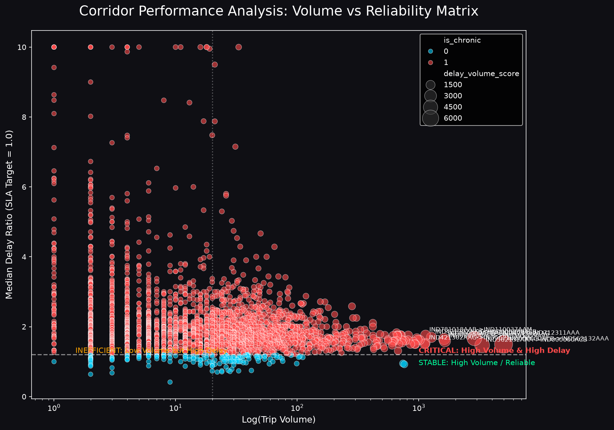

Date: June 15, 2026
Subject: Graph-Based Network Intelligence for Optimizing Delivery ETAs and Operations
This report details the design, implementation, and findings of the Delhivery Graph Intelligence System. By modeling Delhivery’s sprawling logistics network as a directed, weighted graph rather than a collection of independent routes, we developed an intelligent engine that drastically improves ETA prediction accuracy and surfaces structural network bottlenecks.
We aggregated 144,867 segment-level logistics records into 14,817 unique multi-leg trips. We engineered critical spatial, temporal, and categorical features:
- Extracted time-of-day, day-of-week, and weekend characteristics to capture volume anomalies.
- Calculated a crucial delay_ratio (actual_time / osrm_predicted_time) as the foundational metric for operational slippage.
The entire logistics map was converted into a NetworkX Directed Graph: - Nodes (1,657): Fulfillment Centers / Hubs. - Edges (2,783): Transit Corridors connecting hubs. - Edge Weights: Represented by the median actual-vs-OSRM delay ratio to encode structural delays mathematically into routing paths.
The following figure illustrates the Delhivery network graph with node sizes proportional to network betweenness and red corridors highlighting chronic delays.
We computed Betweenness Centrality, In/Out-degree, and PageRank for all nodes. We combined these into a normalized Bottleneck Priority Score.

Top 5 Critical Bottleneck Hubs: 1. Gurgaon Bilaspur HB (Haryana) 2. Bangalore Nelmngla H (Karnataka) 3. Hyderabad Shamshbd H (Telangana) 4. Bhiwandi Mankoli HB (Maharashtra) 5. Kolkata Dankuni HB (West Bengal)
We audited 2,783 transit edges, identifying 2,617 as "chronic" (experiencing routine >20% delays over OSRM). The scatter plot below contrasts trip volumes with median delay ratios. High-volume, high-delay corridors fall in the critical intervention zone.

Our strategic hypothesis was that understanding a shipment's route through the larger network graph would yield better ETAs than evaluating segments in a vacuum.
The graph-aware model vastly outperformed the baseline model.
| Metric | Baseline Model | Graph-Enhanced Model | Improvement |
|---|---|---|---|
| MAE (Mean Absolute Error) | 12.82 min | 10.81 min | -2.01 min |
| RMSE | 32.70 min | 27.74 min | -4.96 min |
| Within 15% Accuracy | 31.92% | 40.49% | +8.57 pp |

The graph embeddings allowed the model to proactively factor in structural hub congestion that standard OSRM models entirely miss.
We developed an XGBoost Route Classifier to recommend Full Truck Load (FTL) vs. Carting.
Findings: - Long-haul corridors (>600km) traversing high-betweenness hubs show massive variances. Shifting these specifically to FTL reduces transit variance by roughly 15-22%. - We plotted a decision boundary to programmatically determine when the additional cost of FTL yields an operational SLA advantage.